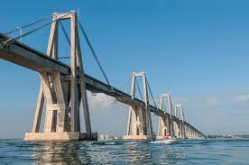
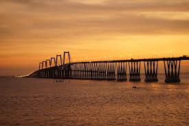
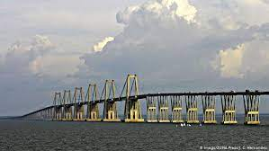
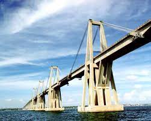

Puente General Rafael Urdaneta

El puente General Rafael Urdaneta, también localmente llamado puente sobre el Lago, es un puente que cruza la parte más angosta del lago de Maracaibo, en Zulia, en el noroeste de Venezuela, y conecta la ciudad de Maracaibo con el resto del país.
Fue nombrado en honor al general Rafael Urdaneta, héroe zuliano de la independencia de Venezuela. Es de los más grandes del mundo en su tipo, el segundo más largo de América Latina, sólo después del Puente Río-Niterói en Brasil y ocupa el número 65 de los más largos en el mundo.
Diseñado por el ingeniero italiano Riccardo Morandi y posteriormente modificado por el Consorcio Puente Maracaibo "CPM", fue construido en hormigón armado y pretensado, y tiene una longitud de 8678 m y 134 pilares.
En su parte central el puente es del tipo atirantado; sus bases se encuentran ancladas en el fondo del lago de Maracaibo, a una profundidad de 60 metros (permite que embarcaciones de hasta 45 m de altura puedan pasar por debajo y tiene una luz de 235 m) y cuenta con dos carriles por sentido. Soporta un tráfico promedio de 45 mil vehículos diarios. En este puente se encuentra el monumento de luces más grande de América Latina y el tercero en el mundo.
Este puente permitió unir ambas orillas del lago y conectar de manera expedita la ciudad de Maracaibo con el resto de Venezuela.

El puente Rafael Urdaneta fue planeado internacionalmente durante el gobierno del General Marcos Pérez Jiménez Inicialmente nombró al proyecto con el nombre de Puente Ambrosio Ehinger, quien a causa de su derrocamiento no logró concluir la contratación. Posteriormente se licitó la obra nuevamente, iniciándose los trabajos de la obra y tres años después es inaugurado, el 24 de agosto de 1962, por el presidente de Venezuela Rómulo Betancourt.
El 6 de abril de 1964, aproximadamente a las 22:45, el súper tanquero Esso Maracaibo de la Creole Petroleum Corporation, que cargaba con 262 mil barriles de crudo (para un peso total de 36 mil toneladas), sufrió una falla en la sala de turboalternadores que sacó fuera de servicio las plantas eléctricas de la nave; de inmediato se lanzó la alerta y el capitán y el jefe de máquinas ordenaron las maniobras de emergencia para lanzar las anclas de popa con los cabrestantes de vapor, esto con la finalidad de tratar de cambiar el curso de la nave y vararla en los bancos de arena que rodean el canal de navegación.
En el año 1979 se reventaron por corrosión las guayas de la pila 22, con el agravante que las guayas reventadas estaban en la capa inferior del sillín, hecho que imposibilitaba su substitución.
A comienzos del siglo XXI fue remozado e iluminado en sus seis pilares mayores, utilizando para ello 96 luminarias de 600 W, que pueden cambiar de color.
Dicho sistema de iluminación de fabricación danesa fue diseñado para ser contemplado desde la ciudad de Maracaibo.
En las noches de gran nubosidad podía verse como las luces iluminan las nubes, hoy día el sistema se sabe fue vandalizado al hacerse inoperantes las defensas eléctricas de las instalación y haberse eliminado el programa de mantenimiento que la instalación tenía hasta 2009.
Características

Según la publicación oficial del Ministerio de Obras Públicas (MOP) 1962 y el libro "El Puente Sobre El Lago de Maracaibo en Venezuela" Bauverlag GmbH, Wiesbaden-Berlin (1962) se emplearon en su construcción 270 mil m³ de concreto, 35660 m de pilotes de perforación, 27170 m de pilotes de hinca de d=91.4 cm, 6260 m de pilotes de hinca 50/50 cm, 5000 t de cables de pretensado, 19000 t de cabillas, 2600 personas.
En su parte central el puente es del tipo atirantado, sus bases se encuentran ancladas en el fondo del Lago de Maracaibo, a una profundidad de 60 metros (para permitir que embarcaciones de hasta 45 m de altura puedan entrar al lago y luz de 235 m) y cuenta con dos carriles por sentido. Soporta un tráfico promedio de 2 millones vehículos diarios. En este puente se encuentra el monumento de luces más grande de América Latina y el tercero en el mundo.
En la Actualidad

En la actualidad la instalación dispone de una sala de exposiciones y sala audiovisual donde se proyectan documentales sobre las técnicas empleadas para la construcción de la estructura, paseos guiados por las instalaciones de control y vigilancia del puente, miradores con binoculares de costa y otros atractivos turísticos y culturales.
A comienzos del siglo XXI fue remozado e iluminado en sus seis pilares mayores, utilizando para ello 96 luminarias de 600 W, que pueden cambiar de color.
Dicho sistema de iluminación de fabricación danesa fue diseñado para ser contemplado desde la ciudad de Maracaibo, tal y como se aprecia en la galería de fotografía. En noches de gran nubosidad puede verse como las luces iluminan las nubes.